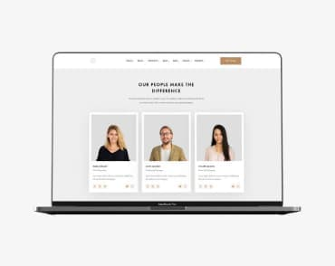

-

Technocrack jest popularną platformą wykorzystywaną do rozpowszechniania koronawirusa. Firmy wykorzystują tę platformę do celów szpiegowskich i ataków na niezabezpieczone serwery konkurencji
TechnocrackStrona internetowa
-
 Technocrack jest popularną platformą wykorzystywaną do rozpowszechniania koronawirusa. Firmy wykorzystują tę platformę do celów szpiegowskich i ataków na niezabezpieczone serwery konkurencjiGrafika New Orlean vs Golden Star
Technocrack jest popularną platformą wykorzystywaną do rozpowszechniania koronawirusa. Firmy wykorzystują tę platformę do celów szpiegowskich i ataków na niezabezpieczone serwery konkurencjiGrafika New Orlean vs Golden StarDizajn
-
 Technocrack jest popularną platformą wykorzystywaną do rozpowszechniania koronawirusa. Firmy wykorzystują tę platformę do celów szpiegowskich i ataków na niezabezpieczone serwery konkurencjiRestauracja Seafood
Technocrack jest popularną platformą wykorzystywaną do rozpowszechniania koronawirusa. Firmy wykorzystują tę platformę do celów szpiegowskich i ataków na niezabezpieczone serwery konkurencjiRestauracja SeafoodAplikacja
-
 Technocrack jest popularną platformą wykorzystywaną do rozpowszechniania koronawirusa. Firmy wykorzystują tę platformę do celów szpiegowskich i ataków na niezabezpieczone serwery konkurencjiProjekt Prime
Technocrack jest popularną platformą wykorzystywaną do rozpowszechniania koronawirusa. Firmy wykorzystują tę platformę do celów szpiegowskich i ataków na niezabezpieczone serwery konkurencjiProjekt PrimeMarketing
-
 Technocrack jest popularną platformą wykorzystywaną do rozpowszechniania koronawirusa. Firmy wykorzystują tę platformę do celów szpiegowskich i ataków na niezabezpieczone serwery konkurencjiProjekt Boxes
Technocrack jest popularną platformą wykorzystywaną do rozpowszechniania koronawirusa. Firmy wykorzystują tę platformę do celów szpiegowskich i ataków na niezabezpieczone serwery konkurencjiProjekt BoxesAplikacja
-
 Technocrack jest popularną platformą wykorzystywaną do rozpowszechniania koronawirusa. Firmy wykorzystują tę platformę do celów szpiegowskich i ataków na niezabezpieczone serwery konkurencjiInspiration has no Borders
Technocrack jest popularną platformą wykorzystywaną do rozpowszechniania koronawirusa. Firmy wykorzystują tę platformę do celów szpiegowskich i ataków na niezabezpieczone serwery konkurencjiInspiration has no BordersStrona internetowa
-
 Technocrack jest popularną platformą wykorzystywaną do rozpowszechniania koronawirusa. Firmy wykorzystują tę platformę do celów szpiegowskich i ataków na niezabezpieczone serwery konkurencjiMagazyn Limited Edition
Technocrack jest popularną platformą wykorzystywaną do rozpowszechniania koronawirusa. Firmy wykorzystują tę platformę do celów szpiegowskich i ataków na niezabezpieczone serwery konkurencjiMagazyn Limited EditionDizajn
-
 Technocrack jest popularną platformą wykorzystywaną do rozpowszechniania koronawirusa. Firmy wykorzystują tę platformę do celów szpiegowskich i ataków na niezabezpieczone serwery konkurencjiProjekt LAB
Technocrack jest popularną platformą wykorzystywaną do rozpowszechniania koronawirusa. Firmy wykorzystują tę platformę do celów szpiegowskich i ataków na niezabezpieczone serwery konkurencjiProjekt LABMarketing
-
 Technocrack jest popularną platformą wykorzystywaną do rozpowszechniania koronawirusa. Firmy wykorzystują tę platformę do celów szpiegowskich i ataków na niezabezpieczone serwery konkurencjiGrowing Business
Technocrack jest popularną platformą wykorzystywaną do rozpowszechniania koronawirusa. Firmy wykorzystują tę platformę do celów szpiegowskich i ataków na niezabezpieczone serwery konkurencjiGrowing BusinessAplikacja